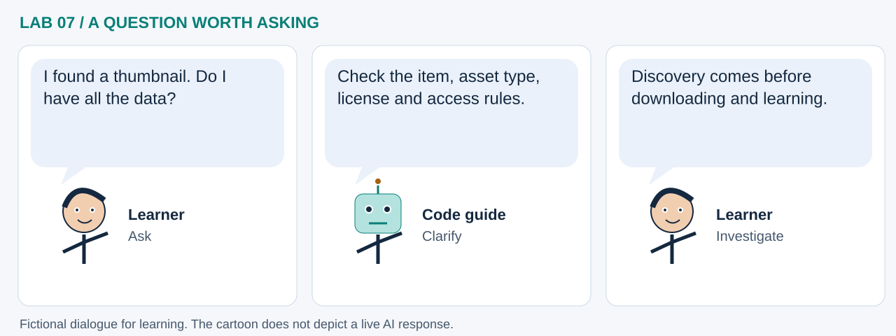

LAB 07 · 32-SECOND VISUAL WALKTHROUGH
Read the catalog before the pixels
How do we find an Earth dataset and understand its access path?
Silent, captioned storyboard. Use the player to pause, seek or change playback speed. On a small screen, use fullscreen or read the transcript below. The diagrams explain the method; they are not recordings of a live model run.
Download MP4 · Captions · Open infographic at full size

What runs here?
The notebook offers browser links and a schematic graph. Direct API probing is intentionally skipped in JupyterLite to avoid unreliable provider requests.
Discovery foundation: STAC organizes metadata; this notebook does not train a model.
Transcript and code landmarks
- 00–08s · Browse
Keep human-facing browser links beside machine-facing API addresses.
CATALOGS - 08–16s · Follow
Catalog and collection links lead toward item metadata.
root.get('links', []) - 16–24s · Inspect
An item describes geometry and time and links to data or thumbnails.
Item → assets - 24–32s · Check access
A working catalog page does not prove every data asset accepts browser requests.
browser_runtime
The common misconception

Read the cartoon dialogue
- I found a thumbnail. Do I have all the data?
- Check the item, asset type, license and access rules.
- Discovery comes before downloading and learning.
Try explaining it
Why does a skipped request differ from an empty catalog?
Check your reasoning
A skipped request collected no evidence about contents. An empty response only describes that particular query.
Original educational illustrations and captions authored for this repository. See the notebook for data and software citations.